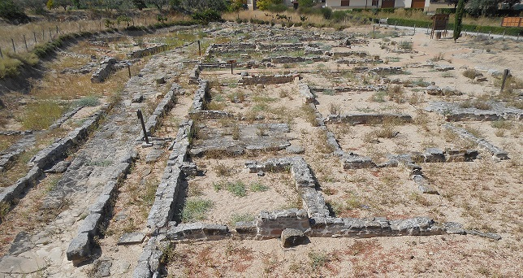

|
La Ciudad romana
de Cara
La Ciudad Romana de Cara se localiza en el término municipal de
Santacara. Data del siglo I a.e.c al IV.
Se han encontrado vestigios prerromanos.
Según Plinio, era una ciudad estipendiaría que fue fundada con el motivo
de las Campañas Sertorianas, y que aparece citada como mansio viaria en
la ruta de Caesaraugusta (Zaragoza) y Pompaelo (Pamplona). En las
fuentes epigráficas aparecen como Karenses.
El hallazgo de los miliarios de Caro y Numeriano como el de Constantino,
localizado en Pitillas, próximo a Santacara, prueban la existencia de
una continuidad de población hasta mediados el siglo IV.
Ver
Video
En las campañas realizadas entre 1974 y 1982 salieron a la luz
estructuras de viviendas, tramos de calzada, mosaicos, cerámicas, ricas
esculturas,…Alcanzó su esplendor en los siglos I y II.
El yacimiento de Cara fue declarado Bien de Interés Cultural en
diciembre de 1993.
Sus restos más valiosos se conservan en el Museo de Navarra.
De sus restos destacamos la calle principal, el cardo, enlosado; la
mansio del siglo I, las casas, el recinto amurallado.

|